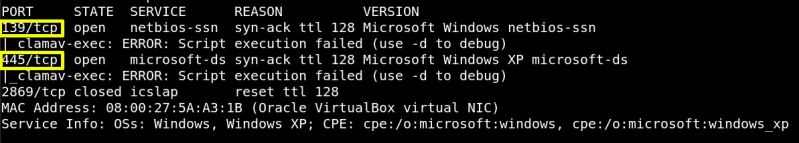
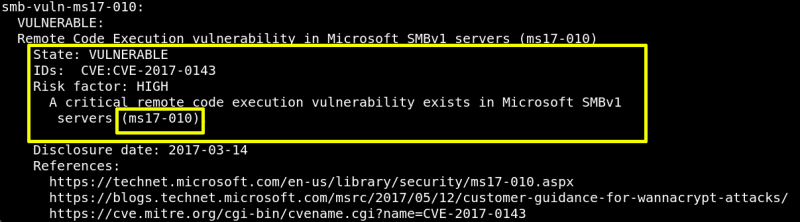

2. Finding Services and Ports
$nmap
-sV -vv --script vuln 192.168.12.23
Output:


As a result we found:
1. It's a Windows XP Machine.
2. Ports under 1000 opened are: 139,and 145.
3. The machine is vulnerable to “Remote Code Execution vulnerability in Microsoft SMBv1 servers (ms17-010)”.
4. CVE: CVE-2017-0143.
Index